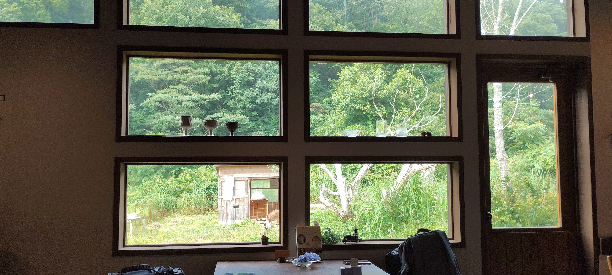
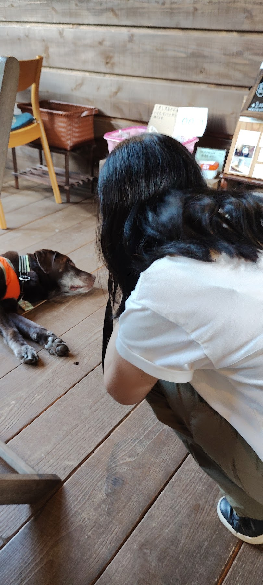
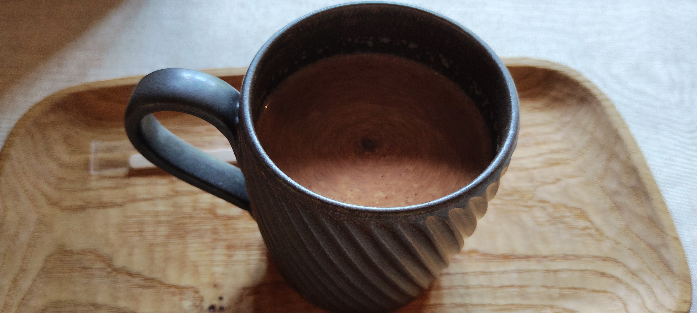
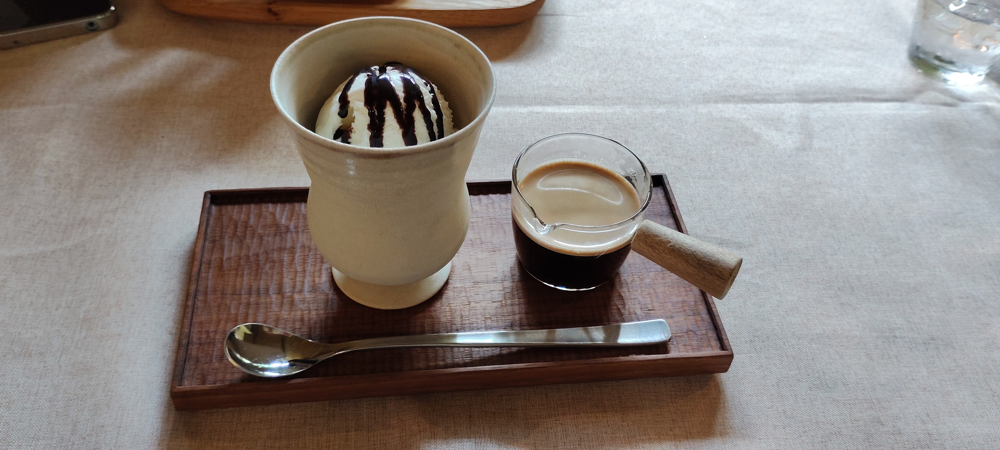
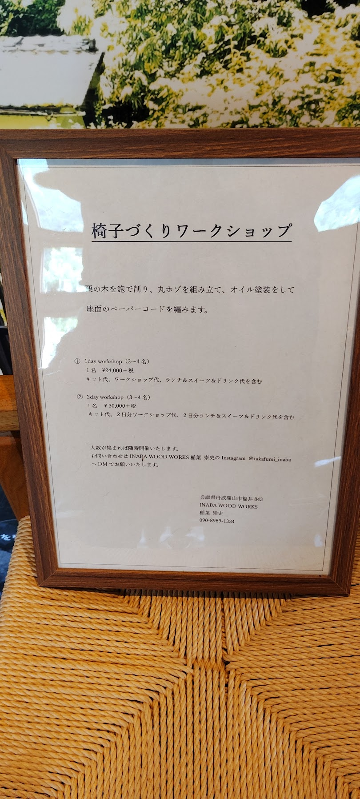

こんにちは、ろぶーです。
7月、兵庫県丹波篠山市の「ツバメヒュッテ」に立ち寄りました。家具や器を眺められるギャラリーとカフェが一緒になった場所です。閉店まであと30分ほどという短い滞在でしたが、窓の向こうの緑を見ながらお茶を飲み、店員さんと話し、看板犬のミントくんにも会えました。

ドアを開けると、ミントくんがお出迎え
お店に入ってまず印象に残ったのは、ラブラドールレトリーバーのミントくん。ドアを開けたところで迎えてくれて、帰るときにも見送ってくれました。公式サイトでも看板犬として紹介されていますが、実際に会うと、この店の思い出を語るときに真っ先に名前が出る理由がわかります。

窓辺でいただくホットチャイとアフォガード
大きな格子窓の向こうには、里山の緑。木のテーブルに座ると、店内の作品と外の景色が自然につながって見えます。いただいたのはホットチャイとアフォガード。景色を眺めながら、慌ただしくない時間を過ごせました。


閉店間際の訪問だったので、次はもう少し時間に余裕を持って来たいところ。店員さんは冬の訪問も勧めてくれました。同じ窓から見る景色も、季節が変わればきっと違って見えるはずです。
お茶だけでは終わらない、木のある空間
店内には木の作品が展示・販売されています。ツバメヒュッテは、INABA WOOD WORKSの家具と選りすぐりの品を揃えたギャラリー＆カフェです。木工のワークショップも案内されていますが、内容や開催日は訪問前に公式情報を確認するのが安心です。

外には山羊もいました。ミントくんに見送られて出発するまで、動物と木と緑が一緒に記憶に残る訪問でした。
ろぶーの結論
ツバメヒュッテは、飲み物をさっといただくだけでなく、窓辺の景色や木の作品、店の人との会話まで楽しめる場所でした。今回は短い滞在だったので、次は季節を変えて、冬の景色も見に行ってみたいです。
訪問前に確認したいこと
所在地：兵庫県丹波篠山市福井843
営業日・定休日やメニューは変わることがあります。出発前にツバメヒュッテ公式サイトで最新情報を確認してください。
写真・体験談は2026年7月の訪問時のものです。施設の概要と所在地は公式サイトで確認しました。この記事にはアフィリエイトリンクを設けていません。